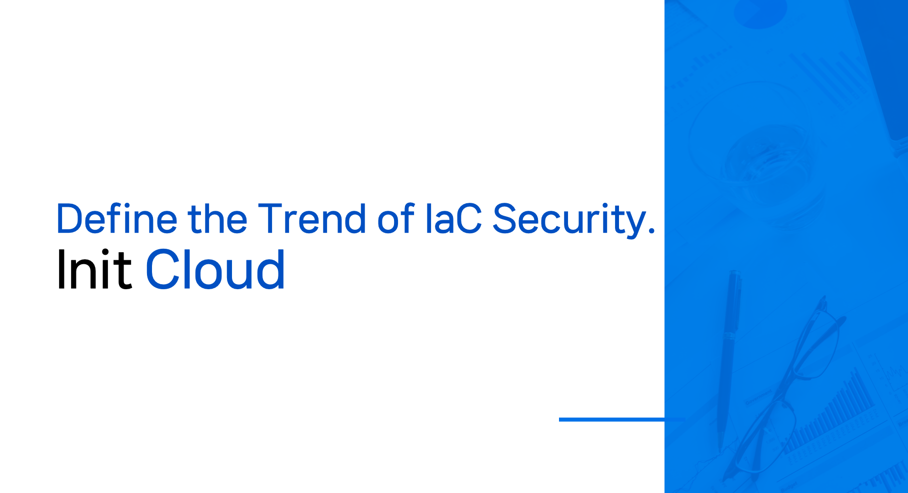
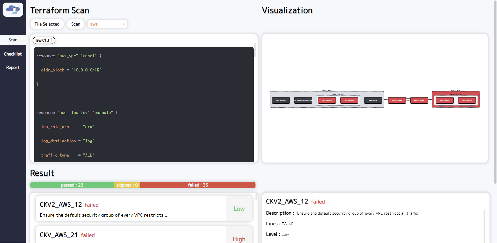

Init Cloud가 제공하는 서비스
클라우드 시장 규모의 증가에 따라 클라우드 보안 문제도 함께 발생하고 있습니다.
보안사고의 95%는 사용자의 설정 오류로 인한 문제입니다. 그렇기 때문에 보안사고의 책임은 사용자가 지게됩니다.
클라우드 인프라를 쉽게 관리할 수 있는 IaC가 등장했지만, IaC를 안전하게 관리할 수 있는 매뉴얼이 존재하지 않는 상황입니다.
Init Cloud는 인프라 관리자가 안전한 인프라를 효율적으로 관리할 수 있는 서비스를 제공합니다. 또한 기업에서는 인프라에 대한 효율적인 컴플라이언스 준수가 가능할 것입니다.
Init Cloud가 제공하고 있는 서비스는 다음과 같습니다.
IaC(Terraform) 보안위협 스캔
- 업로드 한 아키텍처와 보안위협을 시각화
- 스캔에 대한 결과를 시각화한 부분과 하단에서 확인이 가능함
{kind=link}

스캔 체크리스트 확인
- 룰에 대한 상세한 내용 확인 가능
- 사용자 맞춤 룰 수정이 가능하며 스캔에 반영됨
- 아키텍처 상에서 발생 가능한 보안오류와 IaC 상에서 발생 가능한 보안오류 점검

리포트 제공
- 스캔 기록 중 원하는 스캔결과에 대한 리포트 제공
- 사용자가 원하는 형태의 리포트를 제공받음
- 각 룰에 해당하는 컴플라이언스 항목(현재 ISMS-P 지원)을 제공하고 문제가 되는 이유를 고지함


Init Cloud의 특장점
- IaC 특화 보안 서비스를 제공합니다.
현재 시장에서는 클라우드에서 발생할 수 있는 보안위협을 점검하는 서비스들이 존재합니다. 하지만 Init Cloud는 기존에 시장에서 지원하는 보안위협 점검 서비스에 더해서 IaC, 즉 코드이기에 발생하는 보안위협 점검을 지원합니다.
- 국내 컴플라이언스를 지원합니다.
국내에는 IaC 보안위협을 점검하는 서비스가 존재하지 않습니다. 해외의 서비스의 경우에는 국내 컴플라이언스를 지원하지 않습니다. Init Cloud에서는 IaC 보안위협을 점검하며 이에 대한 국내 컴플라이언스(ISMS-P(지원 중), CSAP(예정) 등)를 지원하여 컴플라이언스 인증 시 비용 절약을 도울 수 있습니다.
- 효율적인 IaC 관리가 가능합니다.
Init Cloud는 효율적인 IaC 협업 관리를 지향합니다. 기존에 존재하는 Git, Jenkins 등의 CI/CD 툴은 다양한 코드에 대한 관리를 지원하기 때문에 IaC를 적용하기에 어려움이 존재합니다. Init Cloud는 IaC만을 위한 접근권한 관리, 히스토리 관리, 보안위협 관리를 지원합니다.